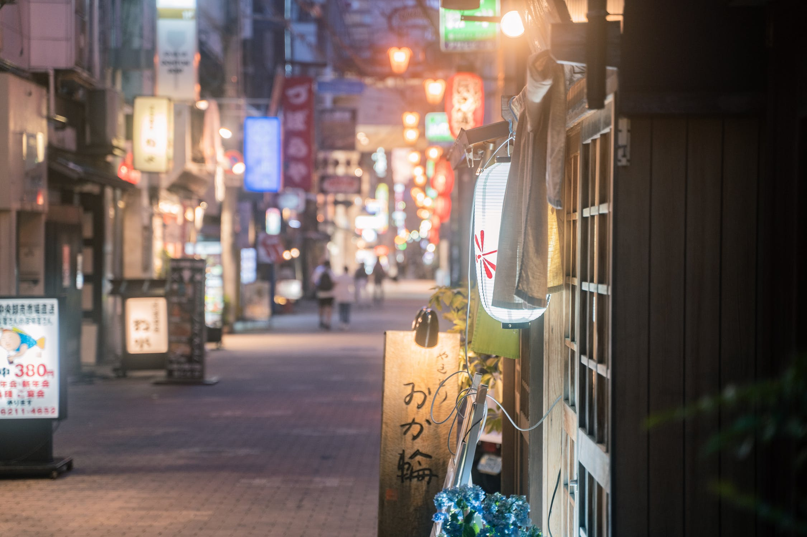
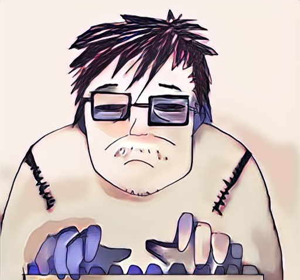
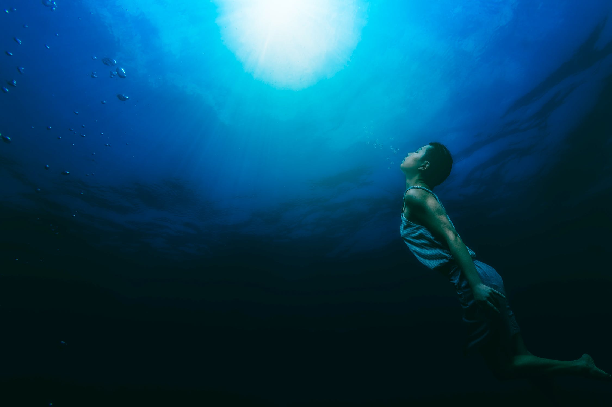

**กว่าจะได้เข้าไปเป็นกราฟิกโปรแกรมเมอร์ในบริษัทเกม AAA**
2022-05-21

วันก่อนผมได้มีโอกาสไปพูดคุยกับคุณกู้ (coolerist) คุณจัมป์ (jumpz journey) และคุณไลท์ (raito)
นับว่าเป็นเกียรติอย่างมากเพราะทุกคนก็มีประสบการณ์ในวงการเกมมากกว่าผมทั้งนั้น
คำถามหลายๆคำถามดีแต่ผมรู้สึกเสียใจที่ตอบได้ไม่ดีอย่างที่คิด (แถมตอบไม่ค่อยตรงคำถามด้วย)
และโดยเฉพาะอย่างยิ่งการที่ผมสปีดรันประวัติชีวิตไปหน่อย ช่วงแรกของชีวิตเลยเหลือแค่เรียนต่อเลยเข้าบริษัทได้
หนทางในการได้มาเลยอาจจะฟังดูช่างง่ายดาย
ผมเลยอยากเขียนบล็อกนี้เพื่อตัดความมั่นใจของคนที่เข้าไปฟังแล้วคิดว่าทุกอย่างมันง่าย
และอยากให้กำลังใจคนที่อยากทำแบบเดียวกันเพราะมันไม่ได้เป็นไปไม่ได้
!!!
#บ่น
เถียงกับตัวเองอยู่สักพักนึกเพราะคิดว่าการเขียนเส้นทางชีวิตตัวเองนี่มันช่างหลงตัวเองซะจริง
แต่สุดท้ายคิดว่ามันไม่มีข้อเสียอะไรเลยที่เกิดขึ้นกับคนอ่าน(มากสุดก็แค่คนเขียนโดนด่า)เลยตั้งใจเขียนออกมา
ถ้าอยากตามบล็อกในอนาคตก็ไปกดไลค์เพจ facebook นี้นะครับ DEV TIL DIE (ไม่ตายไม่เลิกdev)
Path of Exile (เส้นทางสู่การเป็นผู้พลัดถิ่น)
===
คิดว่ามันปฎิเสธลำบากว่า ถ้าคุณโชคดีชนะลอตเตอรี่แล้วมาจุติที่เมืองไทย
แล้วดันไปสนใจเรื่องที่มันเฉพาะทางมากๆ
ก็เหมือนกับว่าคุณตัดโอกาสตัวเองไปแล้วมหาศาลเมื่อเทียบกับพลเมืองในประเทศโลกที่หนึ่ง
ประเทศเรา (ปี 2013) ไม่มีบริษัทเกมระดับ AAA อยู่ในประเทศเลย
เพื่อนของคุณก็อาจจะไม่มีใครสนใจเรื่องเดียวกับคุณ คุณไม่รู้จะคุยกับใครในรุ่นเดียวกัน
และคนทั่วไปก็จะไม่เข้าใจความสำคัญของงานคุณ
ด้วยความที่หลงไหลใน photorealistic rendering
โปรเจกต์จบเป็น renderer ที่เขียนเองคนเดียวเป็นระยะเวลาหลายเดือน
แต่ตอนพรีเซนต์มีกรรมการนอกคนนึงเดินเข้ามาบอกว่า
"คุณใช้เวลาทำแค่อาทิตย์เดียวใช่มั้ย ผมขอข้ามการให้คะแนนคุณไปนะ"
กรรมการไม่เข้าใจความยากของงาน
ตอนนั้นพยายามแก้ตัวแต่ก็ไม่เป็นผล
หน้าซีดเผือก เดินออกจากห้องที่โชว์ผลงานไป แล้วก็เอาม้วนโปสเตอร์ไปทิ้งขยะ
และรู้สึกไม่อยากเรียนต่อ อย่างน้อยก็ไม่ใช่ด้านนี้
แต่
หลายเดือนผ่านไป
ก็ยังอยากรู้อยู่ดีว่าแสงเงามันทำงานยังไง
นั่งเขียน OpenGL ยามว่าง
เริ่มหยิบหนังสือหลายเล่มมาอ่านต่อ
กำลังใจค่อยๆกลับมาอย่างช้าๆ
จำได้ว่าเป็นเฟสที่ใช้เวลาประมาณครึ่งปีกว่าจะกลับโฟกัสเต็มที่เหมือนเดิม
แต่เมล็ดพันธุ์ของการหนีออกนอกประเทศเพื่อไปหาคนที่เห็นค่าในงานเราและมีอุดมการณ์เดียวกับเราก็เริ่มผลิบาน
!!!
#บ่น
การที่รู้ว่าประเทศนี้มันไม่มีงานแบบนี้ แต่ก็ยังสนใจที่จะทำ
หรือการที่เราโดนคนว่ามาแรงๆ แล้วเราก็ยังมีกำลังใจทำต่อไป
ก็อาจจะเป็นตัวบอกได้ส่วนนึงว่าเราชอบทำอะไร
(แต่นี่ไม่ได้เป็นบอกว่าการว่าแรงๆเป็นสิ่งที่ถูกต้อง)
ถ้าใครอยากจะรู้ว่าตัวเองชอบสิ่งนั้นมั้ย
อาจจะเริ่มจากสังเกตตัวเองก่อนก็ได้ว่าเวลาว่างชอบทำอะไร
คุณบอกว่าคุณอยากเป็นอาร์ติส
แต่เวลาว่างคุณไม่เคยฝึกวาดรูปเลย
คุณบ่นว่าอยากทำเกมไม่รู้จะเริ่มยังไง
แต่ชีวิตนี้ไม่เคยคิดที่จะเสิร์ชหาในกูเกิล
หรือเอาเวลาไปเล่น Apex, Dota2, LoL จนยอดถึง 2000 ชม. โดยอ้างว่าเป็นการศึกษาเกมดีไซน์
ก็อาจจะบอกได้ระดับนึงว่าคุณไม่ได้ชอบสิ่งนี้อย่างน้อยก็ในตอนนี้
(มันก็มีเคสย่อยๆมากมาย
แบบที่บ้านไม่ค่อยมีเงินเลยต้องทำงานพิเศษจนไม่มีเวลาศึกษาเพิ่มในด้านที่ชอบ
แต่ก็ขอละเว้นไว้ในฐานที่เข้าใจ)
Eastward (มุ่งสู่ตะวันออก)
===

ด้วยความโชคดีสอบทุนรัฐบาลญี่ปุ่นของสถานทูตผ่านเลยได้มีโอกาสไปเรียนที่มหาวิทยาลัยโตเกียว
หลังเข้าไปเป็นเรียนปริญญาโทได้รวมเกือบสองปี
วันหนึ่ง Polyphony Digital Inc. (PDI) ผู้สร้างซีรี่ส์ Gran Turismo
ก็มาที่มหาวิทยาลัยเพื่อพูดเรื่องที่เค้าทำอยู่ และพยายามหาว่ามีหัวข้อวิจัยอะไรที่พอทำร่วมกันได้บ้าง
วันที่เค้ามามหาวิทยาลัย ผมดันอยู่ในประเทศไทย
พอผมมารู้ตอนหลังว่าเค้ามาเลยอยากหาโอกาสคุยกับเค้าอีกที
เพราะนอกจาก Polyphony Digital จะดังเพราะฟิสิกส์รถดีแล้ว
ยังเป็นบริษัทที่ขึ้นเรื่องความสวยสมจริงของรถอีกด้วย
อยากรู้ว่าพวกเค้าทำกันได้ยังไง
เลยลองหน้าด้านอีเมล์ไปขอเค้าเยี่ยมชมบริษัททันที
ตอนแรกไม่มีคนตอบเมล์เลยลองส่งย้ำไปอีกครั้งจนพวกเค้าก็ตกลงและก็จะได้เยี่ยมชม
วันที่ไปเจอเค้าที่บริษัท ก็โดนลากเข้าห้องประชุมแล้วก็บอกว่าไหนลองพรีเซนต์งานตัวเองสิ
แน่นอนว่าตกใจเพราะที่คุยไว้มันไม่มีแบบนี้ ไม่มีใครบอกว่าต้องมาพรีเซนต์
แต่โชคดีมีเว็บไซต์ส่วนตัวที่โชว์โปรเจกต์ที่เคยทำมาและสไลด์พรีเซนต์งานตัวเองสำหรับคุยกับคนในแล็บเก็บไว้
เลยก็ขอเวลาเค้า 5 นาทีลากสไลด์จากหลายๆไฟล์มารวมๆกันให้เป็นเรื่องราว
เนื่องจากไม่เตรียมตัวเลยรู้ตัวว่าน่าจะพรีเซนต์ไม่ได้เรื่อง
แต่เว็บส่วนตัวมีหลายของหลายอย่างน่าสนใจ
แผนตอนนั้นคือพรีเซนต์ก่อนแล้วจบด้วยการไล่ให้ไปดูเว็บส่วนตัวในมือถือ
เริ่มยังไงไม่สำคัญแต่ตอนจบต้องประทับใจ
แผนประสบความสำเร็จ
พวกเค้าก็ดูประทับใจมาก
จังหวะนั้นเองก็ฮุคต่อด้วยการขอฝึกงานทั้งที่บริษัทเค้าไม่เคยรับฝึกงานมาก่อน
ตอนแรกฝั่งเค้าไม่แน่ใจว่าจะรับฝึกงานได้มั้ยจนเกือบจะตัดใจ
แต่หลายอาทิตย์ผ่านไปผมรวบรวมความกล้าอีเมล์ไปตามเค้าและเค้าก็ตอบว่าโอเคในที่สุด
มารู้ที่หลังว่าบรรดาวิศวกรที่ประทับใจการพรีเซนต์งานไปช่วยกันกดดัน HR ให้ตอบโอเค
โดยตกลงกันว่าเราจะฝึกงานแบบวิจัยกันยาวสองเดือน ทำงานจากที่บ้าน ประชุมอาทิตย์ละครั้ง
!!!
#บ่น
พอมองกลับไปแล้วก็พบว่าโอกาสมันก็เข้ามาเรื่อยๆ
ไม่ว่าจะเป็นงานประกวดทั้งหลาย ประกาศทุนไปเรียนต่อ บริษัทที่แวะมาที่มหาวิทยาลัยเราที่เราอยู่
ขึ้นอยู่กับว่าเราเลือกที่จะเข้าไปลองแตะๆมันดูบ้างมั้ย (เพราะ ถ้าแตะทุกอันก็อาจจะเสียเวลา)
บางครั้งก็อาจจะต้องกล้าเพิ่มขึ้นหน่อย ลองขอเยี่ยมชมบริษัททั้งๆที่ปกติเค้าไม่เปิดให้เข้า ลองขอฝึกงานทั้งๆที่เค้าไม่มีรับฝึก
อีเมล์เดียวที่ไม่กล้าส่ง
ประโยคที่ไม่กล้าถาม
อาจจะเปลี่ยนชีวิตก็ได้
ถ้าได้โอกาสแล้วก็ต้องพร้อมด้วย
อย่างน้อยก็ต้องแนะนำตัวเองได้ดี
โดนอาจารย์ที่ปรึกษาแนะนำให้ทำเว็บส่วนตัว
มันเป็นคำแนะนำที่เปิดประตูโอกาสแทบทุกบานที่ผมเจอ
เค้าคาดหวังตัวเราระดับนึงเพราะ
- อาจารย์ที่ปรึกษาของผมเป็นคนยืนยันอีกเสียงว่าผมทำงานดี
- เค้าไม่เคยรับฝึกงาน นี่เป็นครั้งแรก
- เค้าไม่เคยรับคนพูดญี่ปุ่นไม่ได้
ตอนนั้นรู้สึกได้เลยว่าแบกรับความคาดหวังเอาไว้มหาศาล
ถ้าฝึกงานไม่ดี อนาคตเค้าก็คงจะไม่รับใครมาฝึกอีก ความน่าเชื่อถือของอาจารย์ก็จะน้อยลง
Fortnite (สองอาทิตย์)
===

เนื่องจากการฝึกงานไม่มีแพลนที่ชัดเจน
ช่วงแรกของการฝึกงานก็เอาเปเปอร์ที่อ่านมาเล่าให้ฟังในที่ประชุม
ตอนนั้นก็เห็นว่าเค้าไม่ว่าอะไรเลยทำแบบเดิมไปเรื่อยๆสามอาทิตย์
ตอนอาทิตย์ที่สาม พนักงานอาวุโสท่านหนึ่งก็บอกตอนประชุมว่า
"หยุดพูดเรื่องเปเปอร์แล้วก็ไปเริ่มเขียนโปรแกรมบ้างเถอะ"
ด้วยสีหน้าที่สุดเซ็ง
ถ้าคุณเข้าใจคนญี่ปุ่น ปกติพวกเค้าจะสุภาพมาก
แต่การที่พวกเค้าพูดแบบนี้ คุณรู้ว่าความฉิบหายมาเยือนแล้ว
ความคิดตอนนั้นคือต้องหาทางกู้คืนความเชื่อมั่นของพวกเค้า
ไม่เช่นนั้น ชื่อเสียงอาจารย์ โปรแกรมฝึกงาน และ คนที่พูดภาษาญี่ปุ่นไม่ได้ อาจจะกลายไปเป็นโจ๊กตลกในบริษัท
วินาทีนั้นเลยขอพวกเค้าลาประชุมครั้งหน้าทันที
การลาประชุมรายอาทิตย์ไปหนึ่งครั้งทำให้มีเวลาสองอาทิตย์เต็มๆเพื่อขังตัวเองในห้องและกู้คืนความเชื่อมั่นจากพวกเค้า
รีบกลับบ้านแล้วก็เริ่มเอาเปเปอร์ที่อ่านมาทั้งหมดห้าเปเปอร์มาเขียนเป็นโปรแกรม
พยายามประหยัดเวลาทุกอย่างที่ทำได้
ซื้ออาหารมาตุนที่บ้านจะได้ลดเวลาเดินไปซุปเปอร์หรือเซเว่น
เอาเปเปอร์ไปอ่านตอนเข้าห้องน้ำ
ระหว่างนอนก็ปล่อยคอมพิวเตอร์รันแล้วก็สร้างรายงานออกมา
เวลาที่เหลือก็เขียนโค้ด
เป็นสองอาทิตย์ที่รู้สึกว่ามนุษย์เราจริงๆสามารถประหยัดเวลาได้ค่อนข้างเยอะ
เช่นถ้าเราสามารถสั่งน้ำเปล่าจาก Amazon.co.jp มาส่งที่บ้าน ราคาจะถูกกว่าซื้อที่เซเว่นและประหยัดเวลาเดินด้วย
. . . . .
สองอาทิตย์ผ่านไปไว้เหมือนโกหก
เป็นจุดไคลแม๊กซ์ของเรื่องราว
อีกแค่ไม่ถึง 60 นาทีจะเริ่มประชุมแต่กายหยาบยังอยู่ที่บ้าน
ตอนนั้นจำได้ค่อนข้างแม่นว่าพึ่งตื่นหลังจากนอนไปแค่ไม่กี่ชั่วโมง
เดินทางไปบริษัทใช้เวลาราวๆ 50 กว่านาที
ยังมีบั้กต้องแก้อีกที่
และต้องให้โปรแกรมสร้างรายงานอีกราวๆ 20 นาทีหลังแก้บั้ก
ตอนนั้นวิ่งขึ้นรถไฟฟ้าทั้งเสื้อนอน (รู้สึกอายกับเสื้อสีขาวที่เป็นสีเหลืองมากเพราะใช้มาหลายปีแล้วงกไม่ยอมทิ้ง)
แก้บั้กบนรถไฟฟ้า
และภาวนาให้โปรแกรมสร้างรายงานออกมาเสร็จทัน
แน่นอนว่ารายงานเสร็จไม่ทันเริ่มประชุม
แต่โชคดีที่มีคนในทีมมาสายสองคน
สายจนผมได้รายงานออกมาพอดี
หลังผมพรีเซนต์ผล คนทั้งในและนอกทีมมามุงดู Demo ที่คอมพิวเตอร์ผม
และมันกลายเป็นประสบการณ์เกือบดีที่สุด
ผมผ่อนความเร็วแต่ยังพยายามรักษาคุณภาพงานเอาไว้จนจบฝึกงาน
การฝึกงานจะเริ่มยังไงอาจจะไม่สำคัญแต่ตอนจบต้องประทับใจ
ตั้งแต่ปีนั้นเป็นต้นมา Polyphony Digital ก็รับเด็กฝึกงานทุกปี
Limbo (สภาวะที่ไม่มีอะไรแน่นอน)
===

ผมเลือกที่จะเรียนต่อปริญญาเอก
แต่หลังเรียนไปได้ปีครึ่ง อาจารย์ผมย้ายไปแคนาดา
ตัวเลือกที่ผมคิดในตอนนั้นคือย้ายตามเค้าไปหรือลาออก
ตอนนั้นผลตรวจสุขภาพผมออกมาค่อนข้างแย่ น้ำหนักตัวทะลุร้อย
ค่าสุขภาพหลายตัวทะลุเกณฑ์ที่ในกระดาษเขียนไว้
แต่ตัวที่ดูมีปัญหาที่สุดเหมือนจะเป็นตับ
ยังจำได้แม่นเพราะหมอก็ถามย้ำหลายครั้งว่าคุณไม่ได้กินเหล้าแน่นะ
ตอนนั้นผมเลยคิดว่าถ้าชีวิตมันสั้นเราต้องYOLO เลยเลือกที่จะลาออก และทิ้งงานวิจัยที่ทำไปปีครึ่งเพื่อไปหางานทำในบริษัทเกม (และลดน้ำหนัก)
!!!
#บ่น
จากจุดนั้น ผมก็เลือกกินมากขึ้น ลดการโหมงาน สุขภาพก็ดีขึ้นตามลำดับ
ตอนนี้ค่าทุกอย่างก็ปริ่มแต่ก็กลับมาอยู่ในเกณฑ์
ถ้าย้อนกลับไปได้ก็คงจะพยายามบาลานซ์ชีวิตให้ดีกว่านี้
หลังจากนั้นมีเวลาค่อนข้างจำกัดในการหางาน เพราะ ถ้าไม่ได้งานในญี่ปุ่นก็จะต้องถูกไล่กลับประเทศ
งานประเภทที่ผมทำไม่มีในไทย
การที่ผมกลับไทยก็คล้ายๆกับการตัดสินใจทิ้งของที่เรียนมาทั้งหมด
แถมอาจจะต้องกลับไปต้องไปเจอคนที่ไม่เห็นค่าของงานที่ทำ
หน้ากรรมการนอกดูถูกงานผมก็ลอยขึ้นมา (จำง่ายเพราะหน้าตาเหมือนอาจารย์กลองในซีซั่นเชนจ์)
ยิ่งไปกว่านั้นตอนนั้นคือช่วงพีคสุดของโควิด
ไม่มีบริษัทไหนรับสมัครงาน
ยกเว้นบริษัทนึง
Polyphony Digital บอกผมว่าเค้ายินดีสัมภาษณ์เพราะเค้าประทับใจการฝึกงานของเรา
แต่ก็ยังบอกว่าเราต้องผ่านสัมภาษณ์เหมือนคนอื่นๆเท่านั้นถึงจะเข้ามาทำงานได้
และพาร์ตเดียวที่ยอมยกเว้นให้ไม่ต้องสัมภาษณ์คือพาร์ตเขียนโปรแกรม C++
การสัมภาษณ์ก็เป็นไปด้วยดีแต่ผมชอบแอบไม้ตายไว้สร้างความประทับใจเสมอๆ
ก่อนสัมภาษณ์ผมแอบไปเอา PlayStation 4 ที่แล็บของมหาวิทยาลัยกลับมาที่บ้าน
เอา Gran Turismo Sport มานั่งเล่นแล้วก็จดว่ามีอะไรที่อยากปรับปรุงบ้าง
จากนั้นผมก็เอาไปหาเปเปอร์ที่คิดว่าจะช่วยปรับปรุงของพวกนี้ได้แล้วเขียนโปรแกรมตัวอย่างออกมาเพื่อเตรียมไปคุยกับผู้สัมภาษณ์
ผู้สัมภาษณ์ทุกคนดูค่อนข้างประทับใจ
สามอาทิตย์หลังสัมภาษณ์ ผมก็ได้อีเมล์ว่าผมผ่านสัมภาษณ์ในที่สุด
!!!
#บ่น
ถ้าคุณเป็นคนไทยและอยากเข้าบริษัทต่างประเทศ
การรับคนต่างประเทศมาทำงานต้องทำเรื่องค่อนข้างเยอะ
ความสามารถในการพูดภาษาบ้านเค้าสู้พนักงานคนอื่นไม่ได้
ถ้าเราไม่โดดเด่นพอ หรือแค่เก่งพอๆกับคนในประเทศนั้นๆคนอื่นๆ
มันไม่มีความจำเป็นเลยที่เค้าต้องเอาเรา
สรุป
===
ผมคิดว่าตัวช่วยหลักๆที่ทำให้มาถึงAAAคือ
- เรียนต่อ
ตอนแรกผมไม่อยากมาเรียนต่อต่างประเทศด้วยความวัยรุ่น คิดว่าตัวเองเจ๋งอยู่ไทยเรียนเองก็เก่งได้
แต่การเรียนต่อมันช่วยให้เราเห็นภาพว่าคนอื่นในโลกเค้าอยู่กันที่ระดับไหน
วันที่เราขี้เกียจแล้วเห็นเพื่อนขยันเราก็จะเริ่มขยันตาม
และสุดท้ายคุณก็มีเวลาว่างมาเรียนเพิ่มเติมนอกเวลาอยู่ดี
แถมการเรียนต่อช่วยให้บริษัททำวีซ่าให้เราง่ายขึ้น
(ต้องขอขอบคุณทุนรัฐบาลญี่ปุ่นมา ณ ที่นี้ด้วย)
- คนรอบตัวที่ดี
ที่จุดเริ่มต้นของการเดินทาง
ผมเจอกับพี่ท่านนึงที่แนะแนวผมค่อนข้างบ่อย
ให้ลองทำงานเกี่ยวกับ WebGL
มีเพื่อนที่ดีหลายคนที่ช่วยมาตลอดทาง
มีอาจารย์ที่ปรึกษาที่มีมาตรฐานสูง
ถ้าไม่มีคนเหล่านี้ชีวิตก็น่าจะเปลี่ยนไปเยอะเหมือนกัน
การเดินทางตั้งแต่แรกเริ่มเรียนคอมพิวเตอร์กราฟิกจนถึงเข้าบริษัทได้นั้นใช้เวลานานถึงหกปี
จริงๆแล้วมันไม่ควรจะใช้เวลาเยอะขนาดนี้
ผมก็รู้จักคนญี่ปุ่นบางคนที่เรียนจบปริญญาตรีแล้วเข้าได้เลย
ผมเดินทางอ้อมค่อนข้างเยอะ
และในช่วงปีแรกๆผมเรียนรู้ค่อนข้างช้า
ผมใช้ความเชื่อมั่นและการตัดสินใจที่ใช้ความกล้าค่อนข้างเยอะ
อย่างปกติผมไม่กล้าส่งอีเมล์ไปหาคนแปลกหน้า
ระหว่างเรียนก็เสียวว่าจะมีงานทำมั้ยหรือเรามาเรียนเสียเวลาหรือเปล่า
แถมรู้สึกว่าค่อนข้างเหนื่อยเพราะรู้ตัวว่าเราต้องแอคทีฟตลอดเวลา
แต่ท้ายสุดแล้วก็รู้สึกขอบคุณตัวเองที่ยังมุ่งมั่นเรื่องเดิมๆไม่ยอมเปลี่ยนแปลง
!!!
คำถามสัมภาษณ์งานก็ค่อนข้างเร้าใจ
ผมเลยอยากให้เห็นตัวอย่างคำถามสัมภาษณ์
แต่เพื่อที่จะไม่เปิดเผยคำถามจริง
ผมจะดัดแปลงคำถามเล็กน้อย
- ถ้าคุณมีไฟ 2000000 ดวงในฉาก คุณจะเรนเดอร์ยังไง
- อะไรคือ HDR และเราจะสร้างเครื่องมือเก็บรูป HDR มาได้ยังไง
- อธิบาย Monte Carlo, Importance Sampling และ Ray Tracing สัมพันธ์กันยังไง
- `std::map` กับ `std::unordered_map` ต่างกันอย่างไร อันไหนดีกว่า ทำไมคุณคิดอย่างนั้น
Pictures are taken by the following photographers:
1. Senanur Ceylan
2. Satoshi Hirayama
3. Matthias Zomer